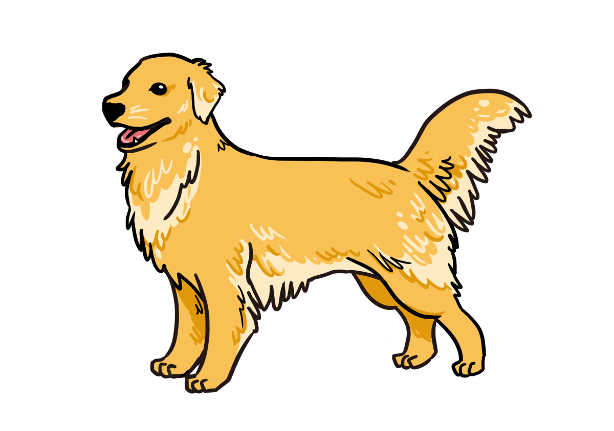
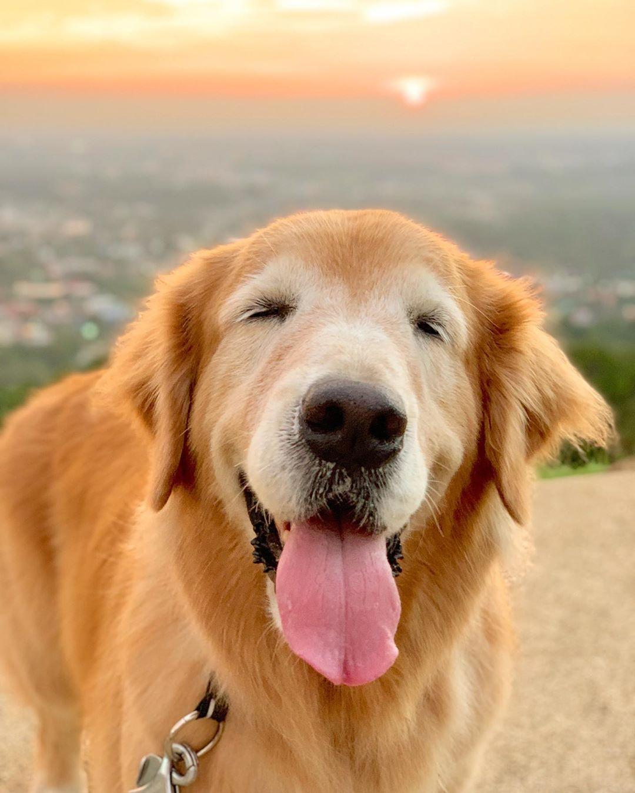
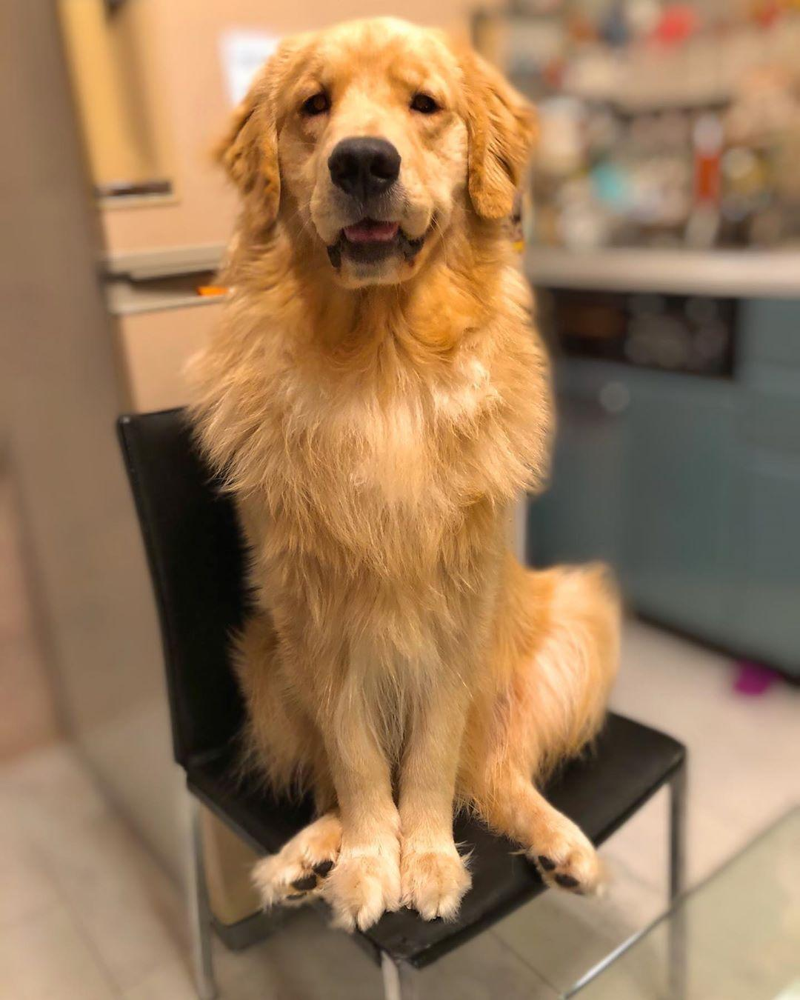
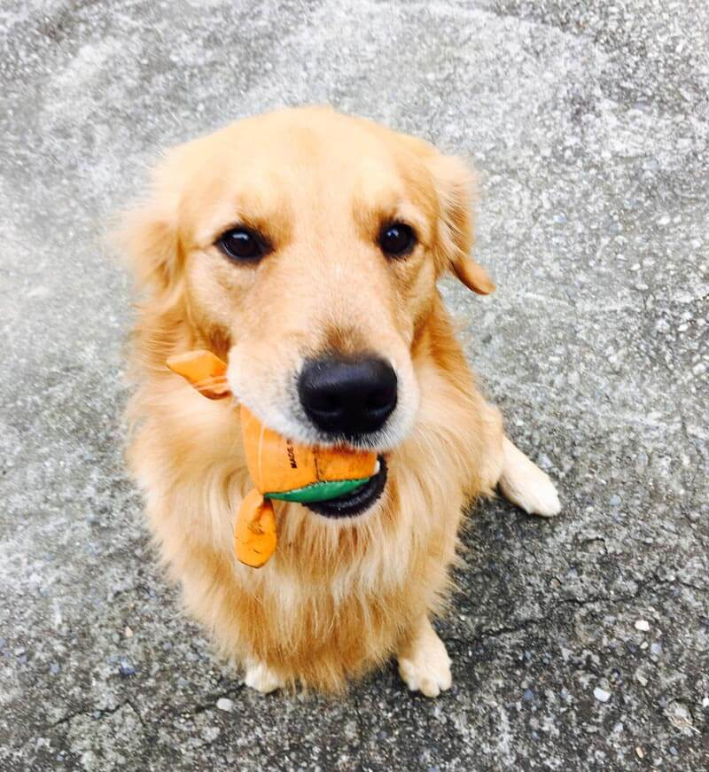

黃金獵犬

外表
黃金獵犬在9個月到一年2個月時達到最大身高，在約兩歲時達到最大體重。雖然體格上它在兩歲成熟，精神上它要三歲以上才能完全成熟，這是一種大型犬種，其外觀上和短毛黃色拉布拉多尋回犬在尺寸，形狀，和毛色上相似，年輕的時候更是如此，而淺色的黃金獵犬也特別相似。最顯見的區別是黃金獵犬奢華的毛皮。
性格
黃金獵犬很活躍，喜歡玩，但也出奇的耐心，可以靜靜地坐幾個小時不動，就好似打獵時在狩獵偽裝（Hunting blind）底下等獵物一樣。可能是打獵的遺傳特質，跳進跳出小船、游泳亦喜歡。和拉布拉多犬一樣，它們的智力，對人的感情，和他們對小孩的容忍力都很出眾。從另一方面來講，他們需要人經常陪伴才能快樂。他們在服從測驗中表現良好並且是優秀的嚮導犬。他們是出色的獵手，以突出的嗅覺而著稱。他們還非常渴望討好主人。
歷史
該品種最初在蘇格蘭培育，地點在"Guichan", 靠近Glen Afric, Dudley Majoribanks(發音為 "Marchbanks")爵士的高原地產
飼養注意事項
食量及運動量都大，故需平衡飲食與運動
體型成長快速，骨頭承受許多負擔，18個月後身體才算發育成熟；成熟期後再進行激烈的運動比較妥當
髖關節容易受傷脫臼，老年時容易有退化性關節炎
容易罹患腫瘤，如：淋巴瘤、血管肉瘤


